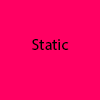
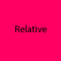
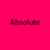
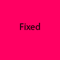
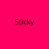

position: static;
Comportement normal (par défaut). L'élément est alors positionné dans le flux avec sa position. Les propriétés top, right, bottom, left et z-index ne s'appliquent pas.
Nous pouvons utiliser les margin, padding, border...

position: relative;
L'élément est positionné dans le flux normal du document puis décalé, par rapport à lui-même, selon les valeurs fournies par top, right, bottom et left. Le décalage n'a pas d'impact sur la position des éléments. Aussi, l'espace fourni à l'élément sur la page est le même que celui fourni avec static.
Cette valeur crée un nouveau contexte d'empilement lorsque z-index ne vaut pas auto. L'effet de cette valeur n'est pas défini pour les éléments table-*-group, table-row, table-column, table-cell et table-caption.
Nous pouvons utiliser les margin, padding, border...

position: absolute;
L'élément est retiré du flux normal et aucun espace n'est créé pour l'élément sur la page. Il est ensuite positionné par rapport à son ancêtre le plus proche qui est positionné en relative, s'il y en a un ou par rapport au bloc englobant initial sinon (body par exemple). La position finale de l'élément est déterminée par les valeurs de top, right, bottom et left.
Cette valeur crée un nouveau contexte d'empilement lorsque z-index ne vaut pas auto (voir card z-index en bas de page). Les éléments positionnés de façon absolue peuvent avoir des marges, ces marges ne fusionnent pas avec les autres marges.
Nous pouvons utiliser les margin, padding, border...

position: fixed;
L'élément est retiré du flux normal et aucun espace n'est laissé pour l'élément. L'élément est positionné relativement au bloc englobant initial formé par la zone d'affichage (viewport), sauf si un des ancêtres a une propriété transform, perspective ou filter qui est différente de none (voir la spécification sur les transformations CSS) ; dans ce cas, c'est l'élément ancêtre qui joue le rôle de bloc englobant. Cela empêche le défilement lorsque la page est parcourue (ou lors de l'impression, le positionne à cette position fixe pour chaque page). Cette valeur crée toujours un nouveau contexte d'empilement. Certaines incohérences existent entre les navigateurs quant au rôle de perspective et filter pour la définition du bloc englobant. La valeur finale de l'élément est déterminée par les valeurs de top, right, bottom et left.
Nous pouvons utiliser les margin, padding, border...
-
position: sticky;
La position de la boîte est calculée en fonction du flux normal du document. Ensuite, la boîte est décalée par rapport à son ancêtre de défilement le plus proche et par rapport à son bloc englobant selon les valeurs de top, right, bottom et left. Dans tous les cas, y compris avec les éléments table, cela n'affecte pas la position des autres éléments.

Cette valeur entraîne toujours la création d'un nouveau contexte d'empilement. On notera qu'un tel élément « adhèrera » à l'ancêtre le plus proche qui dispose d'un mécanisme de défilement (c'est-à-dire quand overflow vaut hidden, scroll, auto ou overlay) même si cet ancêtre n'est pas nécessairement l'ancêtre de défilement le plus proche : cette valeur ne fonctionnera pas dans un élément pour lequel la propriété vaut overflow: hidden ou auto (cf.: cette issue GitHub).
float: right;
Un mot-clé indiquant que l'élément doit flotter du côté droit du bloc qui le contient.
Nous pouvons utiliser les margin, padding, border... et nous ne pouvons pas déplacer l'élément avec top, bottom, right et left..
float: left;
Un mot-clé indiquant que l'élément doit flotter du côté gauche du bloc qui le contient.
Nous pouvons utiliser les margin, padding, border... et nous ne pouvons pas déplacer l'élément avec top, bottom, right et left..
z-index: 0;
La propriété z-index définit le « z-order » d'un élément positionné et de ses éléments fils ou de ses éléments flexibles (les enfants d'un élément avec display: flex). Lorsque des éléments se chevauchent, le z-order détermine l'ordre des différentes couches que formeront les éléments. Généralement, un élément couvrira un autre élément si sa valeur de z-index est supérieure à celle du deuxième élément.